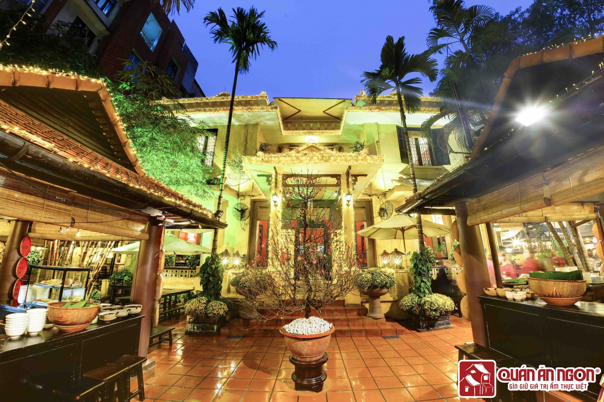
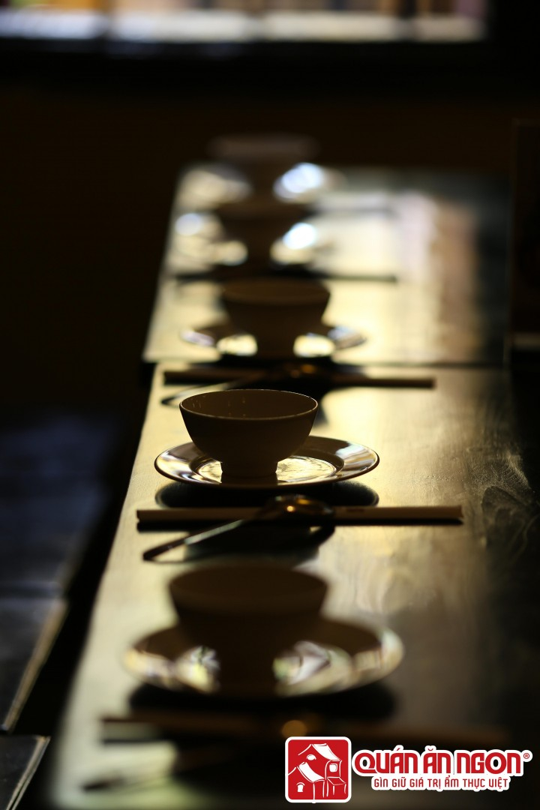

Ẩm Thực Dân Gian

Ở con phố Phan Bội Châu - Hà Nội, có một ngã ba rất nổi tiếng với nhiều người. Đó là đoạn phố Nam Ngư cắt Phan Bội Châu. Ngã ba này nổi tiếng bởi những địa chỉ ẩm thực một thời như phở Kiệm, phở gà Nam Ngư và bây giờ là Quán Ăn Ngon ở 18 Phan Bội Châu.
Đón hàng vạn khách mỗi ngày có lẽ đã đủ nói lên vị trí của Quán Ăn Ngon trong lòng người Việt và du khách bốn phương. Từ một địa chỉ đầu tiên ở thủ đô tại địa chỉ 18 Phan Bội Châu, Hoàn Kiếm, năm 2005, Quán Ăn Ngon đã có thêm 2 địa chỉ mới tại 25T2 Trung Hòa Nhân Chính và B2-R6 Vincom Royal City. Đặt chân đến quán, đối với thực khách lần đầu đến đây sẽ không khỏi ngỡ ngàng trước một không gian mang kiến trúc cổ thơ mộng với gam màu trầm chủ đạo. Hình ảnh dường như chỉ còn lại trong ký ức người Hà Nội gốc hay trong sách vở, hội họa thì nay hiện lên rõ nét hơn bao giờ hết. Ta như thấy lại Hà Nội cổ xưa với những dãy phố tấp nập hàng quà bánh. Còn gì lý tưởng hơn khi thưởng thức hàng trăm món ngon ba miền đủ đầy hương vị màu sắc trong một không gian như thế.
Ai đó đã ví von rằng: “Nấu ăn là một nghệ thuật, người nấu ăn cũng là một nghệ sĩ”. Người nghệ sĩ tạo nên các món ăn hấp dẫn của Quán Ăn Ngon chẳng phải ai xa lạ, đều là những đầu bếp bình dân điêu luyện, tài hoa từ những quán phở, quán bún riêu, xôi xéo… có tiếng ở Hà Nội. Các món ăn tại Quán Ăn Ngon mang hương vị đặc biệt không chỉ nhờ bàn tay điêu luyện của các đầu bếp giỏi nhất, mà còn có sự tâm huyết của toàn bộ đội ngũ quản lý và nhân viên.
Bởi lẽ đó mà suốt từ năm 2005 tới nay, Quán Ăn Ngon vẫn luôn là một địa điểm hấp dẫn để người Việt thêm yêu món ăn quê nhà, một nơi không thể bỏ qua của du khách bốn phương muốn tìm hiểu văn hóa Việt Nam. Vào năm 2009, Quán Ăn Ngon là nhà hàng duy nhất tại Hà Nội lọt vào Top 5 danh sách nhà hàng được ưa chuộng nhất tại Việt Nam do The Miele Guide công bố. Hơn thế nữa, trong số báo của Reuters Life phát hành ở Singapore ngày 10/08/2010 có bài viết về Quán Ăn Ngon khi Quán được một tổ chức chuyên theo dõi hệ thống nhà hàng ở châu Á bình chọn là một trong vài chục nhà hàng ngon nhất ở châu Á và một trong 5 quán ăn ngon nhất ở Việt Nam năm 2010.

Hiện nay, tại Hà Nội, việc xuất hiện nhiều mô hình kinh doanh tương tự như Quán Ăn Ngon dễ gây nhầm lẫn cho khách hàng. Thực tế hiện nay, thương hiệu Quán Ăn Ngon tại Hà Nội chỉ có 3 địa điểm: 18 Phan Bội Châu, 25T2 Trung Hòa Nhân Chính và K33-B2-R6 Vincom Royal City.
“Hồn đất, hồn nước, hồn người và hồn nghề”, tất cả đã hòa quyện tạo nên thương hiệu nổi tiếng Quán Ăn Ngon như “một nét duyên” giữa lòng Hà Nội mà “tiếng thơm” của nó vươn xa trên thế giới để khách đến một lần mà khó có thể quên. Giữ vững triết lý kinh doanh “Mang tới hương vị đặc sắc từ 3 miền làm phong phú thêm tâm hồn Việt trong lòng Hà Nội”, quán không ngừng phát triển, nâng cao chất lượng đồ ăn và phong cách phục vụ nhằm mang lại sự hài lòng cao nhất cho khách hàng mỗi lần trải nghiệm. Với quy mô và định hướng đó, Quán Ăn Ngon mong muốn trở thành 1 dãy Phố Ngon, 1 tuyến phố thứ 37 trong tâm thức của người dân Hà nội và của thực khách muôn phương bấy lâu yêu mến nhà hàng.